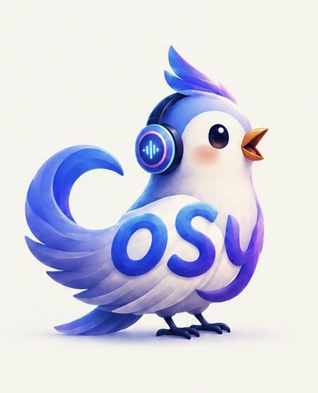

My research interests include speech generative models (e.g. CosyVoice series, InspireMusic), multi-modal large language models (e.g. LauraGPT, MinMo), speech processing and deep learning.
I received the Ph.D. degree at the School of Computer Science and Technology, Harbin Institute of Technology, under the supervision of Prof. Jiqing Han, in 2021. I received the B.E. degree in software engineering from the College of Software, Inner Mongolia University, under the supervision of Prof. Xueliang Zhang, in 2015.
Last, but certainly not least, I'd like to thank my wonderful wife for her understanding and support. About Me
Note: most of my papers can be found on arXiv.
Research on Monaural Speech Enhancement Based on Prior Information in Different Semantic Levels（基于不同语义层级先验信息的单通道语音增强方法研究）.